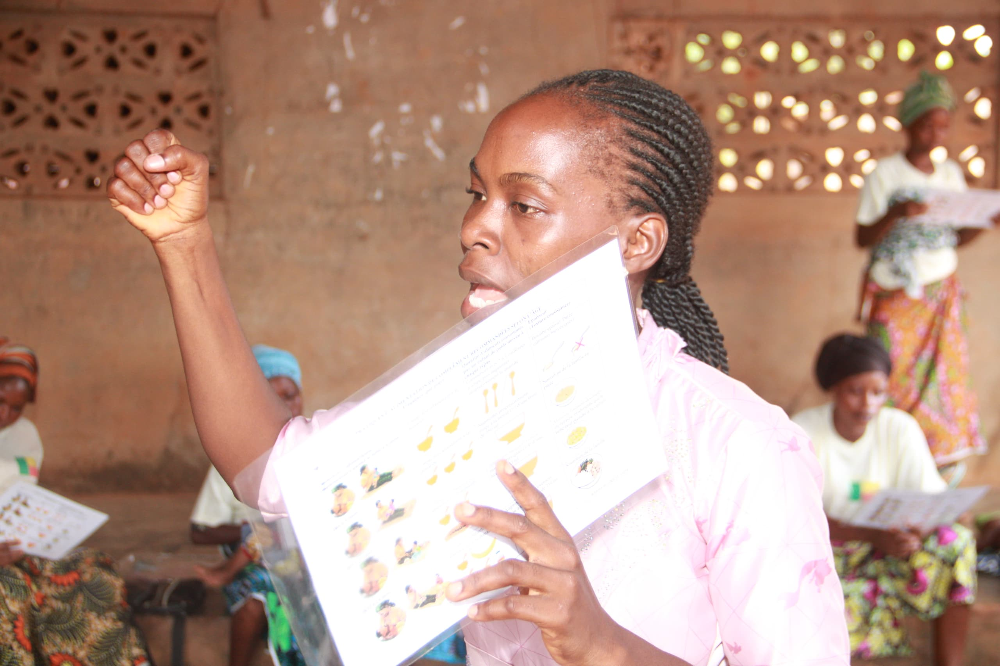
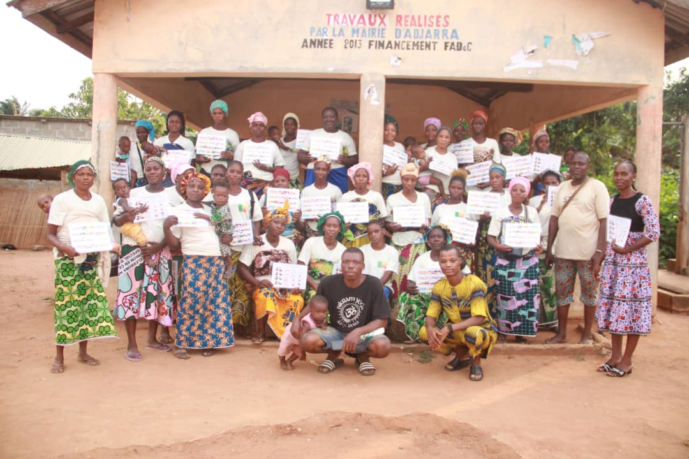
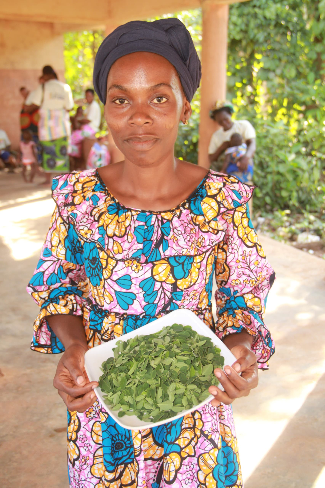

Producing nutritious, healthy and affordable composite flour from locally sourced agricultural products.
Learn MoreA nutrition-focused social enterprise from Benin, turning local ingredients into lasting solutions.
NUTCHE Enterprise is a nutrition-focused social enterprise based in Benin, committed to improving food security, nutrition and livelihoods through innovative, affordable and locally sourced food solutions. Founded by Mèdédodé Monique Sognigbe, a Food Security and Community Nutrition specialist, NUTCHE was established to address the persistent challenge of limited access to safe, nutritious, affordable and culturally acceptable foods across African communities.
We believe that sustainable solutions to malnutrition begin with local resources and community-driven innovation. We transform locally available agricultural products into high-quality, nutrient-rich foods that improve dietary diversity, enhance household nutrition and create economic opportunities for smallholder farmers, women and youth.
Developing affordable, safe and nutrient-dense food products using indigenous ingredients for vulnerable populations, including infants, young children, pregnant women and lactating mothers.
Advancing evidence-based solutions in food safety, quality and nutrition, working with universities, researchers and communities to support product development and policy.
Strengthening household food security through nutrition education, food demonstrations, capacity building and partnerships for sustainable agriculture and healthier diets.
A future where every household has access to safe, nutritious, affordable and sustainably produced foods.
To improve nutrition and food security by developing innovative food solutions, advancing research and empowering communities to build resilient, sustainable food systems.
A composition of maize, soya, groundnuts and sorghum flour
What is done by NUTCHE Enterprise .



Business Name: NUTCHE
Email: nutcheproducts@gmail.com
Phone: +(229) 01 41 232945
Address: ADJARA MUNICIPALITY